Acyclic Conformational Analysis |
|---|
We have seen that staggered conformers of small hydrocarbons (e.g. ethane & butane) are more stable than eclipsed conformers and generally predominate at equilibrium. This structural preference is usually attributed to steric effects, and has been termed torsional strain (or Pitzer strain). In the case of ethane, rotation towards an eclipsed structure brings the electrons in C–H bonds on the different C atoms closer to each other, thereby increasing repulsion. The distance between closest hydrogen atoms in ethane is roughly 2.5 Å in the staggered form, compared with 2.3 Å in the eclipsed rotamer. This latter distance is comparable to known instances of steric hindrance, such as the hydrogens in axial-methylcyclohexane and ortho hydrogens in biphenyl. However, since the bond vectors in ethane are diverging by nearly 40º, this comparison may not be compelling.
Since the eclipsed conformer of ethane has three eclipsed C–H bonds, it is tempting to attribute 1.0 kcal/mole of strain to each, resulting in a total of 3 kcal/mole torsion strain. Indeed, it has been noted that the rotational energy barriers in methyl amine and methanol are lower by 1 kcal/mole for each eclipsed C–H bond that is missing, as shown in group A of the following diagram. Although the non-bonding electron pair(s) in these compounds are shown in spatially directed sp3 orbitals, the exact location is a subject of debate and they do not appear to offer any significant steric hindrance. It might be argued that the C–X bond length is shortened and the C–X–H bond angle narrowed in the alcohol and amine, but molecular structure calculations indicate the eclipsed H---H distance remains the same.
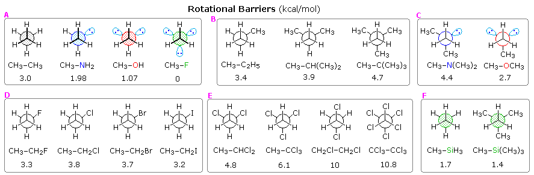
The second group of structures (B) shows the influence of one or more methyl substituents on one of the ethane carbons.
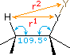 |
The barriers in dimethyl ether and trimethyl amine are unexpectedly high, as shown in group C. Each methyl group seems to add 1.2 to 1.6 kcal/mole to the barrier. For example, the barrier in dimethyl amine is 3.6 kcal/mole, which agrees well with the methyl component in dimethyl ether (1.6 in both cases). However the second methyl in trimethyl amine then adds only 0.8 kcal/mole. The shorter bond lengths and smaller bond angles in these compounds may contribute to these variations, which are poorly understood.
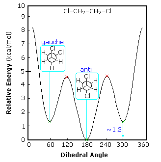 |
Recent studies of rotational barriers in substituted ethanes suggest that a significant contribution comes from sigma bond-antibond interactions which stabilize an anti configuration of W and Z groups in W–C–C–Z constitutions, relative to their gauche orientation. This stereoelectronic factor, which is similar to hyperconjugation, becomes larger as the electronegativity difference between W and Z increases. The conformational preferences of 1,2-difluoroethane and 1-fluoropropane provide instructive examples, as shown on the right.
Although 1,2-difluoroethane should suffer dipole repulsion as the fluorine atoms approach each other, the gauche form is more stable than the anti conformer (ΔHº = 0.6 kcal/mol).
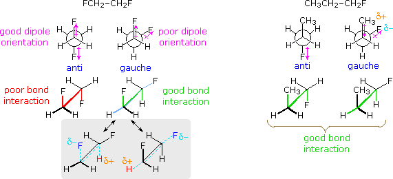 |
|---|
The case of 1-fluoropropane demonstrates another factor. The C2–C3 rotational barrier is about 1 kcal/mol less than that of butane, and the gauche conformer is slightly favored (ΔHº = 0.09 kcal/mol). A similar behavior is observed for 1-chloropropane. Hyperconjugative stabilization is possible for all staggered conformations, and is probably not a determining factor. When the strong C–F bond dipole rotates to approach the CH3–CH2 bond it induces an opposite dipole in that bond. As drawn on the right above, this may actually result in an attractive interaction between the methyl and fluorine substituents (as well as methyl and chlorine in 1-chloropropane).
The concepts described above have been used to explain and predict many other cases of conformational isomerism. Three such examples are shown below, all measured in the gas phase. The rotational barriers of the two 2,3-dichlorobutane diastereomers are significantly different, the meso isomer being ΔHº = 12.5 kcal/mol, and the racemic compound being ΔHº = 9.5 kcal/mol.
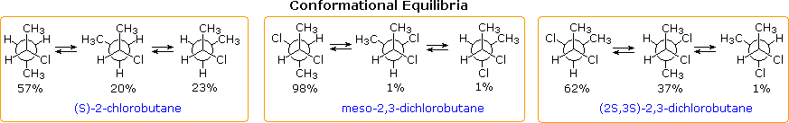
The rotation of a methyl group (or any alkyl group) relative to a double bond is an important conformational event. Propene provides a simple example, as shown below. In the course of the methyl rotation a C–H bond eclipses either an sp2C–H bond or the C=CH2 bond, but not simultaneously. The energy of this rotation follows a simple sine-curve similar to the rotational barrier of ethane, with a smaller amplitude (ca. 2 kcal/mol). The conformer in which the C=CH2 bond is eclipsed is the lower energy rotamer, possibly reflecting a stabilizing interaction between σ-C–H bonds of methyl and the π*-antibonding orbital. This conformer will be termed eclipsed, and the higher energy alternative bisected.
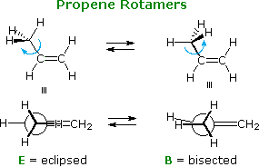 | 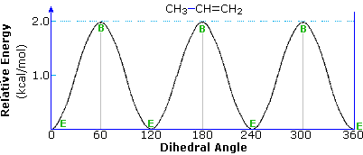 |
Adding a methyl group to propene, as in 1-butene, doubles the number of eclipsed and bisected conformers. Interestingly, the overall rotational barrier is reduced, and the energy difference between the two eclipsed rotamers is over twenty times greater than the difference between the two bisected forms. This is illustrated in the following diagram. The eclipsing shown by magenta colored arrows in conformer B2 is referred to as allylic 1,2-strain (A 1,2-strain). If the vinyl hydrogen is replaced by a larger methyl group, as in 2-methyl-1-butene, this strain adds about 1.3 kcal/mol to the rotational barrier.
A larger substituent, such as tert-butyl in 3,3-dimethyl-1-butene, does not change significantly the stability order of eclipsed relative to bisected rotamers.
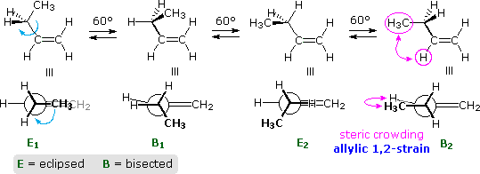 | 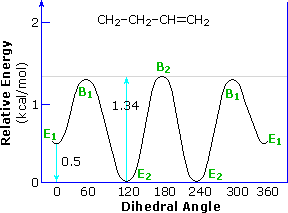 |
Double bond stereoisomers, such as (E) and (Z)-2-pentene have very different rotational energy barriers. The E-isomer, shown below, has a rotational profile very similar to that of 1-butene (above). Since the C-1 methyl is directed away from the ethyl group, this is not surprising.
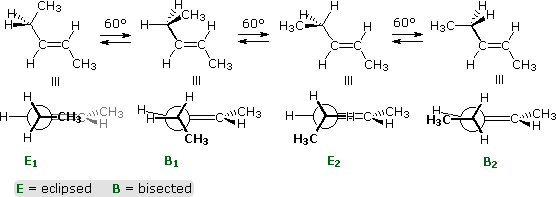 |
For the Z-isomer, the C-1 methyl is cis to the ethyl group, leading to severe steric crowding in the E1 and B1 conformers, shown again by colored arrows. This destabilizing hindrance is called allylic 1,3-strain (A 1,3-strain). Unexpectedly, A 1,3-strain renders eclipsed conformer E2 slightly higher in energy than bisected conformer B2. The perpendicular conformation, P, is lower in energy than either E2 or B2.
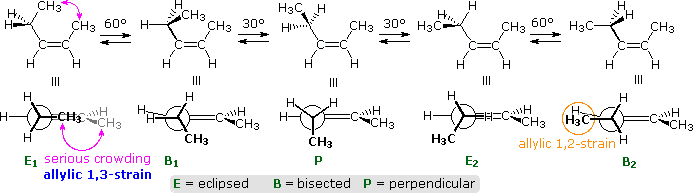 |
To examine an energy plot of these rotamers click the following button:
The conformations and rotational energy profile of acetaldehyde, shown below, are very similar to propene. The activation energy for rotation is half that of propene, reflecting the absence of a hydrogen on the oxygen atom. This is the same kind of change noted earlier for ethane compared with methanol.
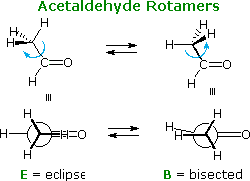 | 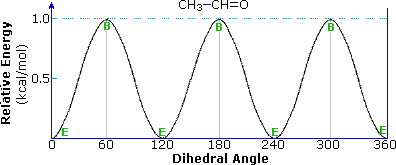 |
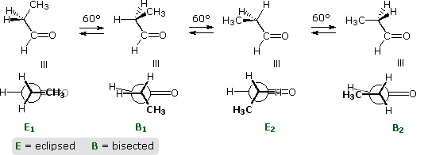 | 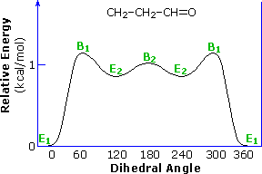 |
Although the conformational differences shown here are not large, addition reactions to aldehydes and ketones are sensitive to the configuration of substituents on the α-carbon atom. Because of the importance of such asymmetric induction in the stereoselective formation of new stereogenic centers, it has been extensively studied. A full discussion of this topic is available in the stereoelectronic effects section of this text.
Esters and amides generally have higher rotational barriers and greater conformational preference than do aldehydes and ketones, with the s-Z form (sometimes termed s-trans) being more stable, as illustrated in the following diagram. (This notation, which refers to the alkoxy sigma-bond to the carbonyl carbon, corresponds to that used for diene conformations.) For example, the CH3O–CHO barrier in methyl formate is 12 to 13 kcal/mol (s-Z is more stable than s-E by 4.75 kcal/mol), and the enthalpic preference for s-Z increases to ca. 8 kcal/mol in methyl acetate (R1 = R2 = CH3).
These planar conformations are favored by a stabilizing n-π conjugation, as shown by the resonance formulas on the right. This requires the delocalizing n-electron pair on the ether oxygen to occupy a p-orbital-like orientation ortho to the plane of the carbonyl group. The remaining n-electron pair must then occupy a sp2-orbital, designated by the cyan colored oval. In the s-Z conformer this electron pair overlaps with the anti-bonding C–O σ- bond of the carbonyl group, as described elsewhere. Dipole repulsion also contributes to a destabilization of the cis form.
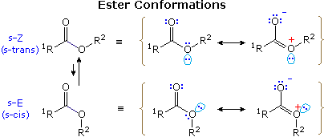 |
The contribution of n-π conjugation to the structure of amides is even greater than observed in esters, as indicated by their lower C=O stretching frequency. Thus, the barrier to rotation about the NH2–CHO bond in formamide is over 18 kcal/mol, and the CH3NH–CHO bond in N-methylformamide is more than a kcal/mol greater. Such barriers permit the observation of conformational isomers of amides by room temperature nmr. For simple amides like N-methylacetamide and the formamides noted above, the trans conformer is more stable than cis by more than 1.5 to 2.5 kcal/mol.
This page is the property of The Edvibe Team.
Comments, questions and errors should
be sent to contact@edvibe.co.ke.
These pages are provided to the IOCD to assist in capacity building in chemical education. 05/05/2013


Six-Membered Rings |
|---|
Conformations of cyclohexane and its simple substituted derivatives have been described elsewhere in this text. The chair conformation is the favored configuration, and bulky substituents prefer to occupy an equatorial location. The left hand structures and table in the following diagram summarize the free energy differences between equatorial and axial orientations of some simple groups. These energies are commonly reported as A values. An axial methyl group is hindered by two gauche butane interactions, each accounting for ca. 0.9 kcal/mol. Since an axial ethyl group may rotate so that it appears no larger than a methyl to the remaining axial hydrogens on the same side of the ring, its A value is the same as methyl. Larger alkyl groups have increased A values, commensurate with increased crowding with the axial hydrogens. The trimethylsilyl group has a value half that of a tert-butyl group, reflecting the longer bond length of C–Si. Click the button for a table of common A values.
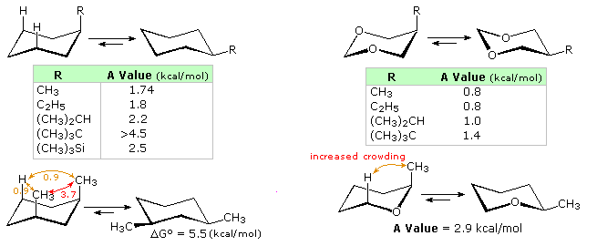 |
The heterocyclic compounds on the right side of the diagram illustrate the decreased axial hinderance that results from the absence of nearby axial hydrogens. From the smaller but significant energy differences shown, it may be concluded that the steric hindrance of non-bonding electron pairs on oxygen cannot be ignored. Other factors in these cases are the shorter bond length and tighter C-O-C angle, which may act to increase hindrance, as shown by the lower right example.
Inserting a double bond into a cyclohexane ring (exo or endo) introduces distortion that influences structural and chemical behavior. In the case of an exocyclic double bond, an axial hydrogen is removed from one side of the ring, and the increased bond angle at the sp2-carbon expands some of the remaining axial:axial distances. The conformational preference for an equatorial methyl substituent in 3-methylcyclohexanone is thereby reduced, as shown on the left of the following diagram. However, the change in bond angle perturbs the strain free cyclohexane configuration to such a degree that double bond addition reactions are exceptionally favored. Thus, the heat of hydrogenation of methylenecyclohexane is roughly 1 kcal/mol greater than that of methylenecyclopentane or methylenecycloheptane. Furthermore, the rate and equilibria constants for addition reactions of cyclohexanone are greater than those for comparable reactions of similar ketones.
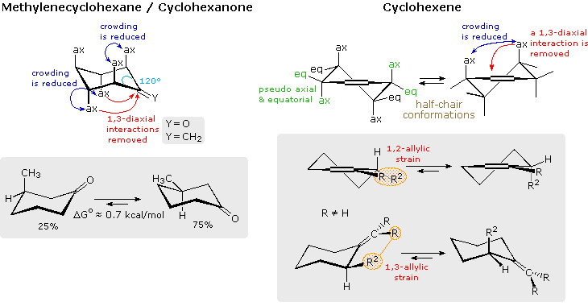 |
The endocyclic double bond in cyclohexene produces an even greater change in structure, as illustrated on the right side of the above diagram. The planar configuration of the double bond favors a pair of half-chair conformations, having a 5.3 kcal/mol equilibrium barrier. A model of a twist chair is displayed on the right. Twisting of the allylic carbons skews the orientation of their axial and equatorial bonds into pseudo axial or equatorial directions. These locations may be identified in the model by clicking the last button. Allylic strain exists when an equatorial allylic substituent is hindered by a substituent on the double bond. A good example of how this strain may influence the course of a reaction is found in enamine formation from α-substituted cyclohexanones. The following equations are typical. Most significantly, the enamine double bond is generally formed away from the α-substitution, especially with pyrrolidine. The A 1,3-strain shown in the bracketed formulas is undoubtedly responsible for this regioselectivity. Second, when a reference point exists, the α-substituent is found to be axial in the final product, reflecting A 1,2-strain.
|
Stick Model Pseudo Locations On/Off |
This page is the property of The Edvibe Team.
Comments, questions and errors should
be sent to contact@edvibe.co.ke.
These pages are provided to the IOCD to assist in capacity building in chemical education. 05/05/2013